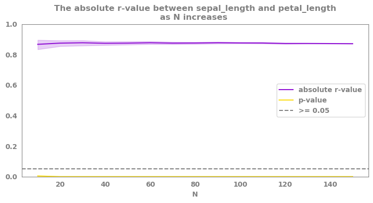
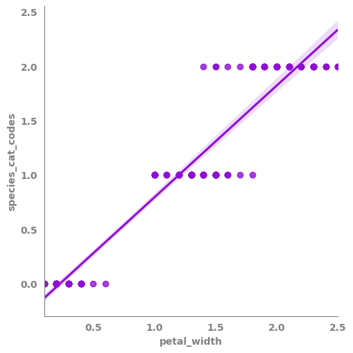
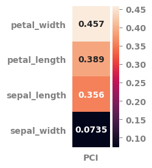
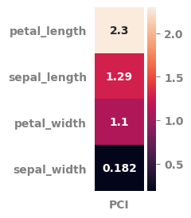
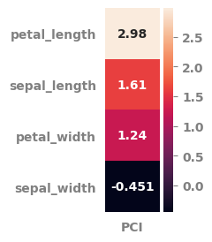

Using frequentist_statistics functions from the jmspack package¶
Showing the usage of the following frequentist_statistics functions¶
normal_check()
correlation_analysis()
correlations_as_sample_increases()
multiple_univariate_OLSs()
potential_for_change_index()
[1]:
import os
tmp = os.getcwd()
os.chdir(tmp.split("jmspack")[0] + "jmspack")
[2]:
import numpy as np
import pandas as pd
import matplotlib.pyplot as plt
import seaborn as sns
from jmspack.frequentist_statistics import (normal_check,
# permute_test,
correlation_analysis,
correlations_as_sample_increases,
multiple_univariate_OLSs,
potential_for_change_index
)
from jmspack.utils import apply_scaling
import pingouin as pg
import statsmodels.api as sm
[3]:
os.chdir(tmp)
[4]:
if "jms_style_sheet" in plt.style.available:
_ = plt.style.use("jms_style_sheet")
[5]:
df = sns.load_dataset("iris")#.head(10)
normal_check()¶
compare the distribution of numeric variables to a normal distribution using the Kolmogrov-Smirnov test¶
[6]:
normal_check(df)
[6]:
| feature | p-value | normality | |
|---|---|---|---|
| 0 | sepal_length | 0.170584 | True |
| 1 | sepal_width | 0.064491 | True |
| 2 | petal_length | 0.000011 | False |
| 3 | petal_width | 0.000200 | False |
correlation_analysis()¶
Run correlations for numerical features and return output in different formats¶
[7]:
feature1 = "sepal_length"
feature2 = "petal_length"
[8]:
X = df[feature1]
y = df[feature2]
[9]:
output = correlation_analysis(data=df,
check_norm=True,
dropna = 'pairwise',
permutation_test = False,
n_permutations = 10,
random_state=69420)
[10]:
output["summary"].round(4)
[10]:
| analysis | feature1 | feature2 | r-value | p-value | stat-sign | N | |
|---|---|---|---|---|---|---|---|
| 0 | Pearson | sepal_length | sepal_width | -0.1176 | 0.1519 | False | 150 |
| 1 | Spearman Rank | sepal_length | petal_length | 0.8819 | 0.0000 | True | 150 |
| 2 | Spearman Rank | sepal_length | petal_width | 0.8343 | 0.0000 | True | 150 |
| 3 | Spearman Rank | sepal_width | petal_length | -0.3096 | 0.0001 | True | 150 |
| 4 | Spearman Rank | sepal_width | petal_width | -0.2890 | 0.0003 | True | 150 |
| 5 | Spearman Rank | petal_length | petal_width | 0.9377 | 0.0000 | True | 150 |
correlations_as_sample_increases()¶
Run correlations for subparts of the data to check robustness¶
[11]:
summary, fig = correlations_as_sample_increases(data=df.select_dtypes("number"),
feature1=feature1,
feature2=feature2,
starting_N = 10,
step = 10,
method='pearson',
random_state=42,
bootstrap = True,
bootstrap_per_N = 20,
plot = True,
addition_to_title = '',
alpha = 0.05)
findfont: Font family ['sans-serif'] not found. Falling back to DejaVu Sans.
findfont: Font family ['sans-serif'] not found. Falling back to DejaVu Sans.

multiple_univariate_OLSs()¶
Tmp¶
[12]:
features_list = df.select_dtypes(float).columns.tolist()
[13]:
target = "species_cat_codes"
[14]:
df=df.assign(**{target: lambda x: x["species"].astype("category").cat.codes})
[15]:
X = df[features_list]
y = df[target]
[16]:
OLS_df = multiple_univariate_OLSs(X=X, y=y, features_list=features_list)
OLS_df
[16]:
| coef | std err | t | P>|t| | [0.025 | 0.975] | rsquared | rsquared_adj | |
|---|---|---|---|---|---|---|---|---|
| sepal_length | 0.7742 | 0.051 | 15.292 | 0.0 | 0.674 | 0.874 | 0.612402 | 0.609783 |
| sepal_width | -0.8019 | 0.140 | -5.739 | 0.0 | -1.078 | -0.526 | 0.182037 | 0.176510 |
| petal_length | 0.4404 | 0.012 | 36.632 | 0.0 | 0.417 | 0.464 | 0.900667 | 0.899996 |
| petal_width | 1.0281 | 0.026 | 39.910 | 0.0 | 0.977 | 1.079 | 0.914983 | 0.914408 |
[17]:
_ = sns.lmplot(data=df,
x=features_list[3],
y=target)

potential_for_change_index()¶
Calculate the potential for change index based on either variants of the r-squared (from linear regression) or the r-value (pearson correlation)¶
[18]:
df.head()
[18]:
| sepal_length | sepal_width | petal_length | petal_width | species | species_cat_codes | |
|---|---|---|---|---|---|---|
| 0 | 5.1 | 3.5 | 1.4 | 0.2 | setosa | 0 |
| 1 | 4.9 | 3.0 | 1.4 | 0.2 | setosa | 0 |
| 2 | 4.7 | 3.2 | 1.3 | 0.2 | setosa | 0 |
| 3 | 4.6 | 3.1 | 1.5 | 0.2 | setosa | 0 |
| 4 | 5.0 | 3.6 | 1.4 | 0.2 | setosa | 0 |
[19]:
pot_df = potential_for_change_index(data=df.select_dtypes("number"),
features_list=features_list,
target=target,
minimum_measure = "min",
centrality_measure = "median",
maximum_measure = "max",
weight_measure = "rsquared_adj",
scale_data = True,
pci_heatmap = True,
pci_heatmap_figsize = (1, 3)
)

[20]:
pot_df.round(3)
[20]:
| PCI | min | median | max | rsquared_adj | P>|t| | |
|---|---|---|---|---|---|---|
| sepal_length | 0.356 | 0.0 | 0.417 | 1.0 | 0.610 | 0.0 |
| petal_length | 0.389 | 0.0 | 0.568 | 1.0 | 0.900 | 0.0 |
| petal_width | 0.457 | 0.0 | 0.500 | 1.0 | 0.914 | 0.0 |
| sepal_width | 0.074 | 0.0 | 0.417 | 1.0 | 0.177 | 0.0 |
[21]:
pot_df = potential_for_change_index(data=df.select_dtypes("number"),
features_list=features_list,
target=target,
minimum_measure = "min",
centrality_measure = "median",
maximum_measure = "max",
weight_measure = "rsquared",
scale_data = False,
pci_heatmap = True,
pci_heatmap_figsize = (1, 3)
)

[22]:
pot_df.round(3)
[22]:
| PCI | min | median | max | rsquared | P>|t| | |
|---|---|---|---|---|---|---|
| sepal_length | 1.286 | 4.3 | 5.80 | 7.9 | 0.612 | 0.0 |
| petal_length | 2.297 | 1.0 | 4.35 | 6.9 | 0.901 | 0.0 |
| petal_width | 1.098 | 0.1 | 1.30 | 2.5 | 0.915 | 0.0 |
| sepal_width | 0.182 | 2.0 | 3.00 | 4.4 | 0.182 | 0.0 |
[23]:
pot_df = potential_for_change_index(data=df.select_dtypes("number"),
features_list=features_list,
target=target,
minimum_measure = "min",
centrality_measure = "mean",
maximum_measure = "max",
weight_measure = "r-value",
scale_data = False,
pci_heatmap = True,
pci_heatmap_figsize = (1, 3)
)

[24]:
pot_df.sort_values(by="PCI", ascending=False).round(3)
[24]:
| PCI | min | mean | max | r-value | p-value | |
|---|---|---|---|---|---|---|
| petal_length | 2.982 | 1.0 | 3.758 | 6.9 | 0.949 | 0.0 |
| sepal_length | 1.609 | 4.3 | 5.843 | 7.9 | 0.783 | 0.0 |
| petal_width | 1.244 | 0.1 | 1.199 | 2.5 | 0.957 | 0.0 |
| sepal_width | -0.451 | 2.0 | 3.057 | 4.4 | -0.427 | 0.0 |